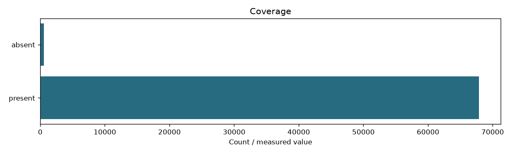

| content_sha256 | 7ce36b0880254cec449fd8bfb8292bb526115103956764bc9be51b1bc2faaecf |
|---|---|
| fingerprint | 59e9e37e51079a9ca0354fde2f77967c97b6d83a6fd7fe8d0b451863dcba0c8a |
| documents | 68414 |
| passages | 255445 |
| zone | body |
| input_fingerprint | f15488c8b98dc3f6f7f38152db2226dfef073173cd184609831edea290884f26 |
| documents_present | 67867 |
